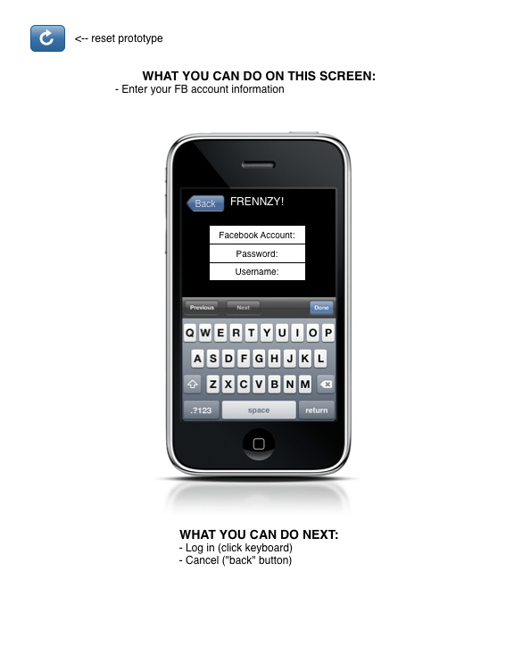

<map name="GraffleExport">
	<area shape=poly coords="51,35,44,43,52,50,59,43,56,43,52,47,47,43,51,38,51,41,57,37,51,32,51,35" href="start.html">
	<area shape=rect coords="34,28,72,57" href="start.html">
	<area shape=rect coords="193,323,387,471" href="main-menu.html">
	<area shape=rect coords="209,218,251,237" href="main-menu.html">
</map>

